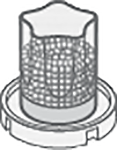

Le distributeur de billes () permet de déposer des billes dans les cuvettes des systèmes (méthode automatisée) pour réaliser, sur des échantillons plasmatiques, des tests in vitro permettant la détermination qualitative et/ou quantitative des composants de la coagulation et/ou de la fibrinolyse intervenant dans l'hémostase par la méthode de mesure du temps de coagulation.
Le distributeur de billes est destiné à l'usage des professionnels certifiés autorisés par le laboratoire médical.
distributeur de billes

voir bille page 1